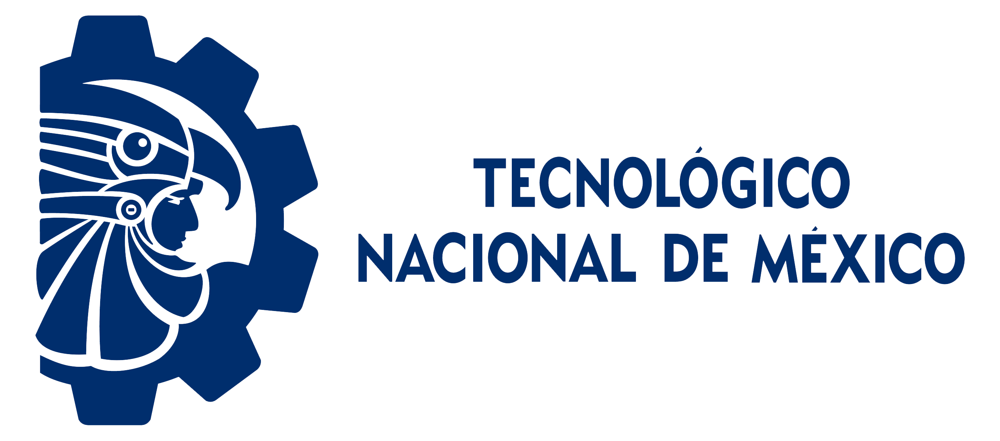
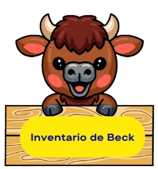

Inicio
|
Becas
|
Convenios
|
Salud Mental
|
Salud Física
|
Buzón de quejas
¿Te has sentido
estresado, ansioso y/o depresivo,
pero no sabes si es el momento de acudir con
ayuda profesional
?
El Inventario de Beck evaluará el nivel de intensidad de tus sentimientos y te mostrará si es necesario que acudas con un psicólogo. Esto con solo contestar un par de preguntas de forma ANONIMA.
